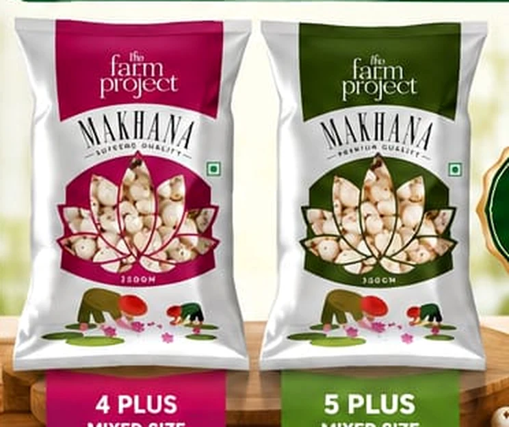

Hygiene by design
Machine-based handling supports a cleaner processing environment.
ROOTED IN PURNIA, BIHAR
Traditional crop. Modern precision. We bring raw makhana seed through careful, machine-led processing to create premium popped makhana.
01 / EXPLORE OUR MAKHANA
Whether you're buying for your business or looking for a tasty snack, start with the makhana that's right for you.
Explore makhana grades, packs and supply options for your business.
Explore plain makhanaDiscover playful flavours and crunchy makhana snacks from KRUNKO.
Explore flavoured makhanaPlain Makhana takes you to the bulk buyer page. Flavoured Makhana takes you to the KRUNKO customer page.
02 / GET TO KNOW KAUSHAL AGRO
At Kaushal Agro Industries Private Limited, we believe a crop as special as makhana deserves thoughtful care, from the region where it grows to the people who enjoy it.

Carefully processed. Graded for choice.
Traditional makhana.
Modern precision.
Based in Purnia, Bihar, we bring raw makhana through controlled, machine-led processing, grading and careful separation to help create more consistent finished products.
Explore our makhana03 / WHAT MAKES US DIFFERENT
From the first wash to the final grade, our process is designed to bring more control and consistency to makhana.
Machine-based handling supports a cleaner processing environment.
Defined size categories help make quality easier to understand.
Additional grading and colour sorting help refine premium lots.
An integrated workflow is designed to support larger volumes.
04 / FIND US IN PURNIA
We are based in Purnia, Bihar, a region known for makhana cultivation and trade.
Map link searches for the supplied plant address; it does not confirm the exact map pin.